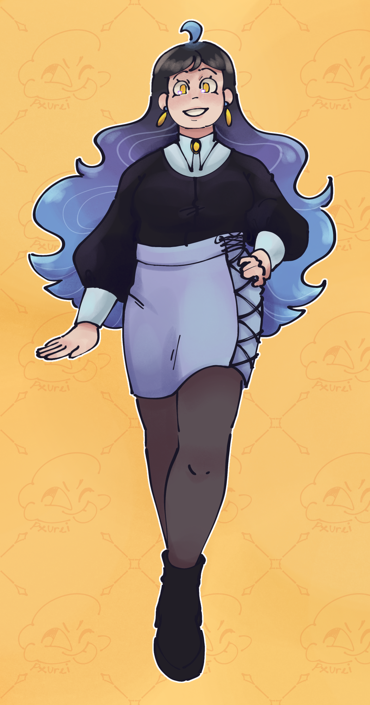
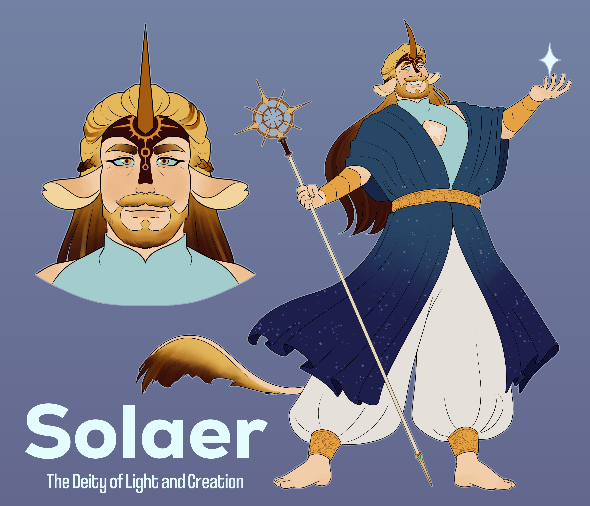
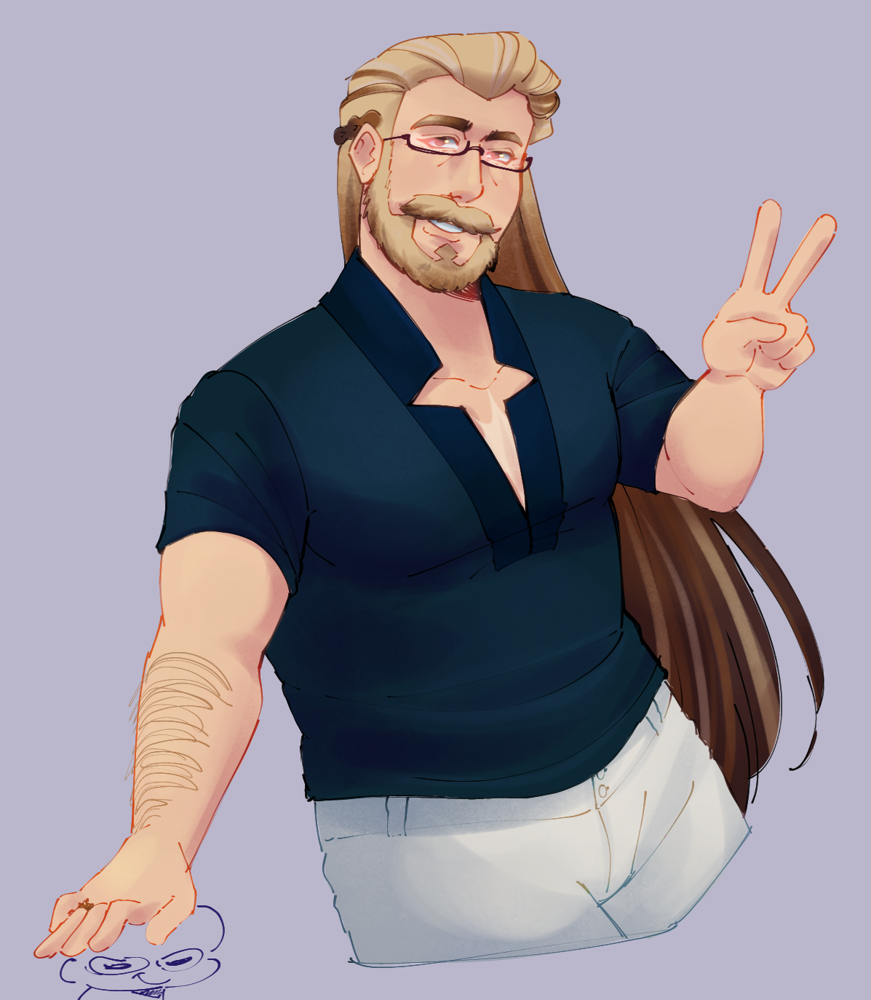
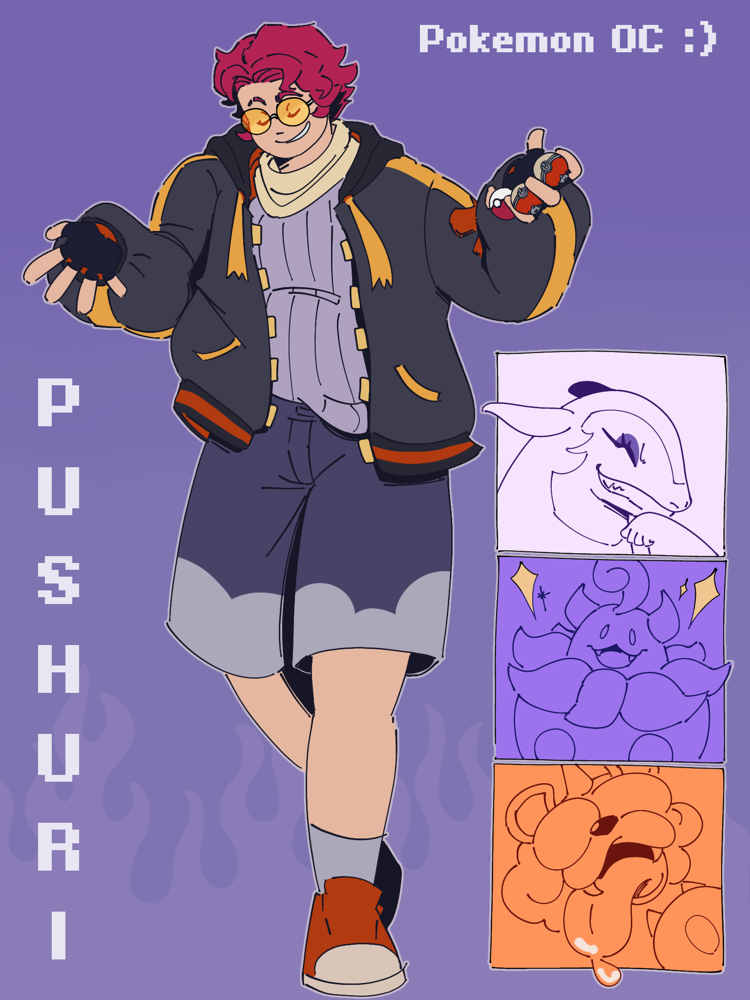
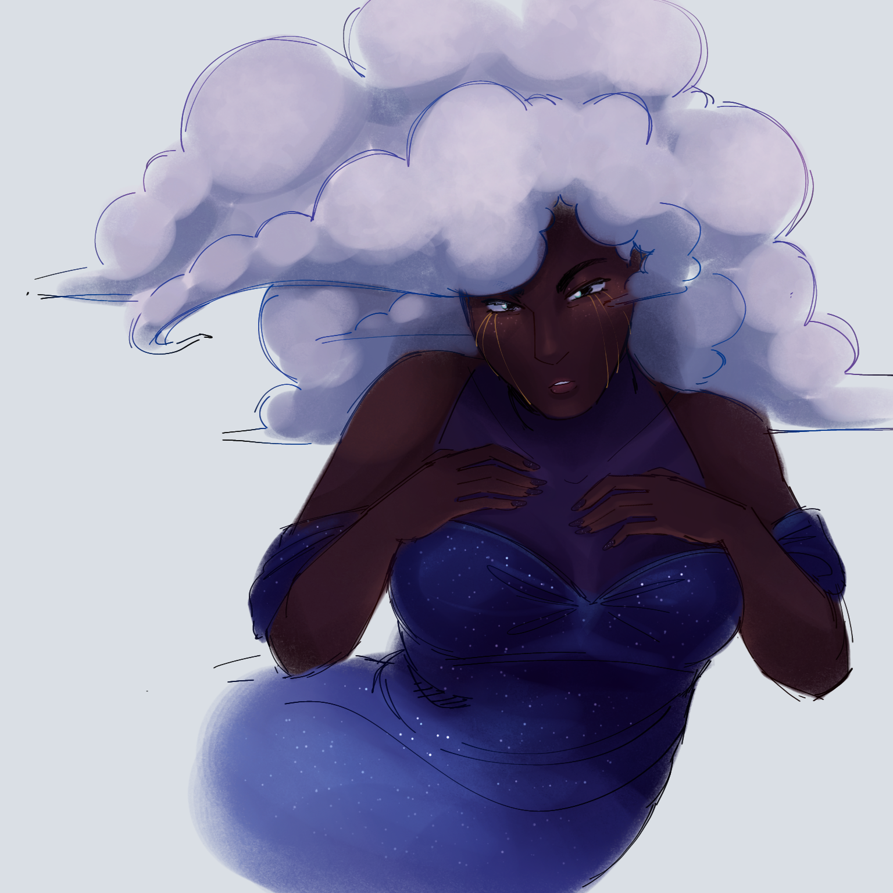

Dio
I started making OCs when I was a kid, maybe even as early as 9 years old. I really loved making characters I could place into my favorite games or tv shows, but I also enjoyed making my own stories. My favorite OC to this day is a character I made in a story with my friends, Sol.




